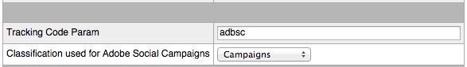
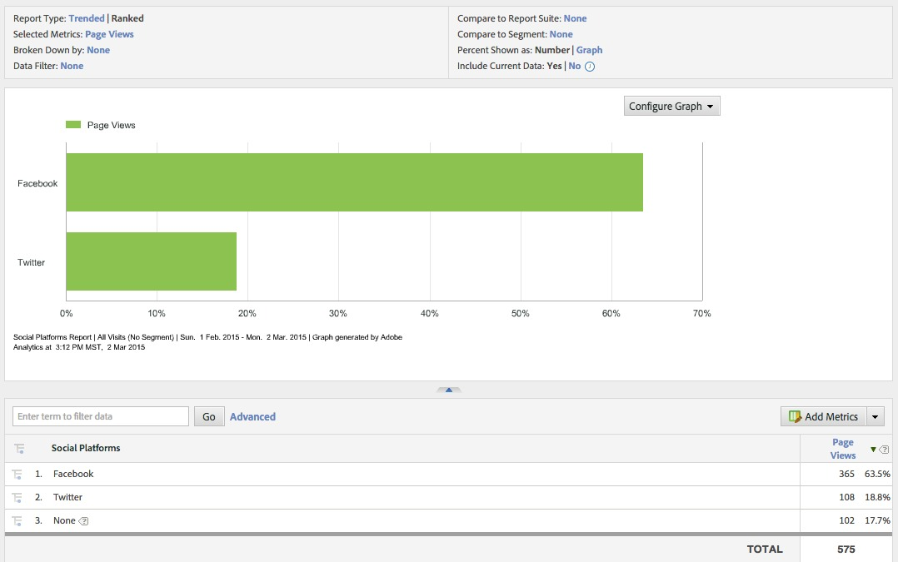
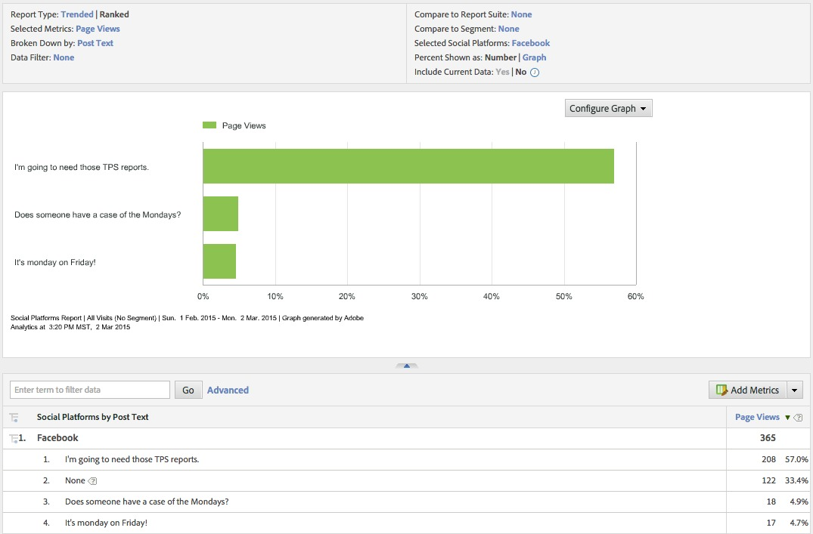

How to implement a website for Social Analytics
- Verify that your report suite is enabled for social.
- Add the getQueryParam to capture the tracking code (example)
- Verify that the campaign tracking code matches the tracking code configured for your report suite. You can verify this in Dr. Teeth > Report Suites Enabler For Social [0]
- To verify, publish a shortened link to your Facebook or Twitter property using the Adobe Social Publisher (example)
- Notice the parameters included in the shortened link e.g. http://30mondays.com/?adbsc=social_20150227_41268356&adbid=1543028439319630&adbpl=fb&adbpr=1541988592756948
- Wait 12hrs to ensure that data collection has completed and verify that data is being collected by generating a report at: https://sc.omniture.com > View All Reports > Social > Social Variables > Social Platforms. Remove the Mentions metric from the reports and add the metric Standard > Page Views. [1]
- You can further drill down into the data by performing a Breakdown on Social > Owned Post IDs > Post Text [2]
The implementation code for this website can be seen at 30mondays or by viewing the source
[0]

[1]

[2]
